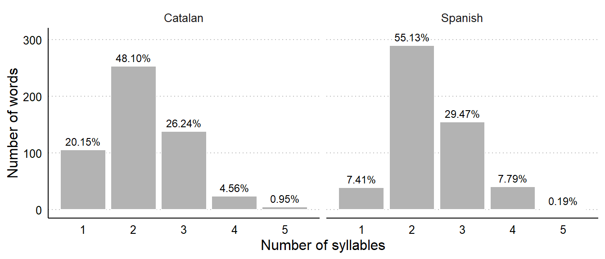
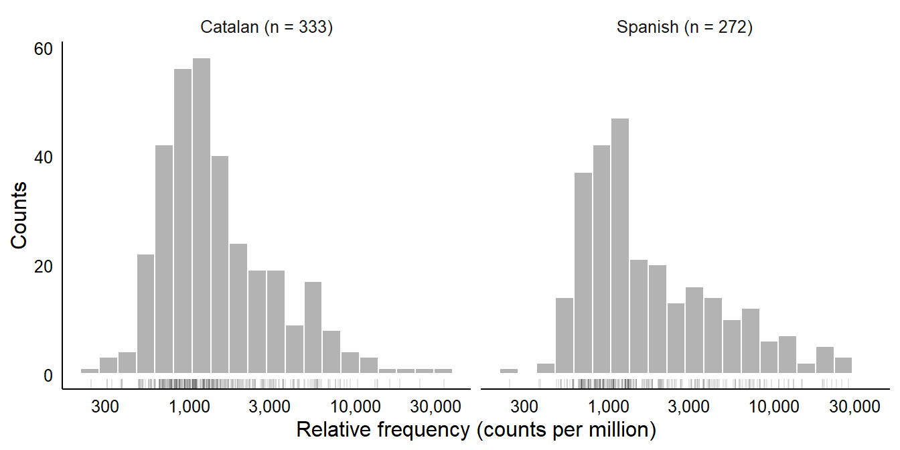
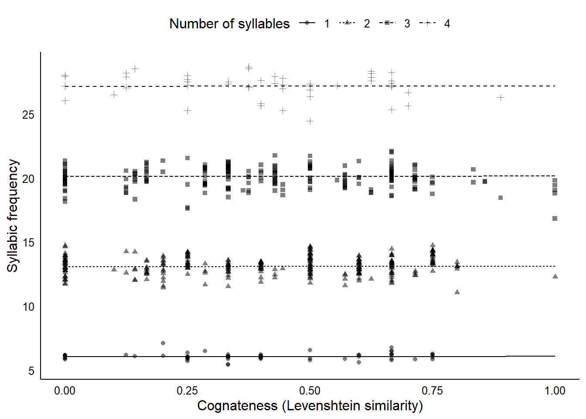

References
Appendix A: frequency and language exposure as separate predictors
As a robustness check, we fit a model similar to the one described in the main manuscript, but including lexical frequency and language degree of exposure as separate predictors, instead of the composite measure Exposure. Language degree of exposure (DoE) was included in interaction with Age and Cognateness, while lexical frequency (Frequency) was included as a main effect. ?@tbl-coefs-doe shows a comparison between the posterior distribution of the regression coefficients of both models. Overall, results are equivalent.
?(caption)
Posterior distribution of regression coefficients of the model including the Exposure composite predictor, and of the model including lexical frequency (Frequency) and degree of exposure (DoE) separately. Median: median of the posterior distribution in the probability scale. 95% HDI: 95% highest density interval of the distribution. p(ROPE): overlap between the 95% HDI and the ROPE, indicating the posterior probability that the true value of the coefficient is equivalent to zero. In the right column, we show a graphical representation of the median and 95% HDI of each coefficient, with a reference dotted line indicating the location of zero.
Appendix B: frequency and language exposure as separate predictors
We define syllable frequency as the rate of appearance of individual syllables in the word-forms included in the Barcelona Vocabulary Questionnaire (BVQ) [@garcia-castro2023bvq]. Each item corresponds to a Catalan or Spanish word, and has an associated phonological transcription in X-SAMPA format [@wells1995computercoding]. These transcriptions are syllabified. Some examples:
?(caption)
Most Catalan and Spanish words had two syllables, with Spanish words having three and four syllables more often than Catalan words. Less than 1% of the words included in the analyses presented in the main body of the manuscripts had five syllables. No words had more than five syllables (see Figure 1). We extracted lexical frequencies from the English corpora in the CHILDES database [@macwhinney2000childes; @sanchez2019childesdb]. Using the Catalan and Spanish corpora was not possible due to the low number of children and tokens included in the corpora.
We now present how syllable frequencies were calculated. Every exposure to a word-form also counts as a exposure to each of the syllables that make up such word. Every time a child hears the word casa [house], they are exposed to the syllables ca and sa. Syllables that appear embedded in words with higher lexical frequency will also be more frequent. To compute the relative frequency of each syllable in Catalan and Spanish (i.e., how many times the syllables appears in every million words in Catalan or Spanish speech), we summed the relative lexical frequency in CHILDES of every word that contains such syllable in the corresponding language. Figure 2 shows the distribution of frequencies across syllables in Catalan and Spanish. In the log10 scale, syllable frequencies in Catalan and Spanish followed a slightly asymmetric distribution, with most syllables scoring around 1,000 counts per million, and a longer tail to the right of the distribution.

To estimate the association between word-level syllabic frequency and cognateness, while controlling for the number of syllables in the word, as words are expected to necessarily increase the syllabic frequency of the word), we fit a multilevel, Bayesian linear regression model with syllabic frequency (the sum of the syllabic frequency of the syllables in a word) as response variable, and the main effect of the number of syllables (\(Syllables\)) and \(Cognateness\) [Levenshtein similarity between a word and its translation equivalent, @levenshtein1966binary] as predictors. We added translation equivalent-level random effects for the intercept and the main effect of \(Syllables\) (some translation pairs had a different number of syllables in each language). We used a Gaussian distribution to model syllabic frequency scores after standardising this variable and the predictors. We used a weakly informative prior for all parameters involved in the model (see Equation 1 for a formal equation of this model and its prior). We conducted statistical inference by evaluating the proportion of the 95% highest density interval (HDI) of the posterior posterior distribution of each coefficient that fell into the region of practical equivalence [ROPE, see the main manuscript for a more detailed explanation, @kruschke2018bayesian].
\[ \begin{aligned} \text{Syllable frequency} &\sim \mathcal{N}(\mu, \sigma)\\ \mu &= (\beta_0 + u_{0_{i}}) + (\beta_1 + u_{1_{i}}) \text{Syllables} + \beta_2 \text{Cognateness} \\ \beta_{0-3} &\sim \mathcal{N}(0, 10) \\ u_{{0-1}_{i}} &\sim \mathcal{N}(0, \sigma_{u_i}) \\ \sigma_y & \sim \text{Exponential}(2)\\ \Big(\begin{smallmatrix} u_{0_{i}} \\ u_{1_{i}} \\ \end{smallmatrix}\Big) &\sim \mathcal{N} \Big(\Big(\begin{smallmatrix}0 \\ 0\end{smallmatrix}\Big), \Sigma_{u}\Big) \\ \Sigma_{u} &= \Big(\begin{smallmatrix} \\ \sigma_{u_{0}} & \rho_{u_{0}} \sigma_{u_{0}} \sigma_{u_{1}} \\ \rho_{u_{1}} \sigma_{u_{1}} \sigma_{u_{0}} & \sigma_{u_{1}} \end{smallmatrix}\Big) \\ \sigma_{u_{0-1}} &\sim \mathcal{N_{+}}(1, 0.1) \\ \rho_{u} &\sim LKJcorr(2) \\ \end{aligned} \tag{1}\]
We fit this model running 4 sampling chains with 1,000 iterations each. ?@tbl-syll-coefs shows a summary of the posterior distribution of the fixed effects in the model. As expected, words with more syllables scored higher in syllabic frequency: all posterior draws for the regression coefficient of the main effect of this predictor fell outside the ROPE defined between -0.5 and +0.5 (\(\beta\) = 5.64, 95% HDI = [5.57, 5.71]). Keeping the number of syllables constant, the effect of cognateness was negligible: all of the posterior distributions of this predictor fell within the ROPE, providing evidence that the true value of the increment in syllabic frequency for every increase in cognateness is equivalent to zero (\(\beta\) = 0.01, 95% HDI = [-0.06, 0.07]).
?(caption)
Figure 3 shows the median posterior-predicted syllabic frequencies for words with one to four syllables, for the whole range of cognateness values. Overall, cognate words’ syllabic frequency is equivalent to that of non-cognates. This suggests that the cognate facilitation effect in word acquisition reported in the present study is not the result from an association between cognateness and higher syllabic frequencies.
